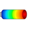
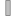

PipeWithScalarFieldVisualizing a pipe with scalar field quantities along the pipe axis |

|
Diagram
Information
This information is part of the Modelica Standard Library maintained by the Modelica Association.
Model PipeWithScalarField visualizes a pipe and a scalar field along the pipe axis. The latter is shown by mapping the scalar field to color values with a color map and utilizing this color at the perimeter associated with the corresponding axis location. Typically the scalar field value is a temperature, but might be also another quantity. Predefined color maps are available from MultiBody.Visualizers.Colors.ColorMaps and can be selected via parameter "colorMap". A color map with the corresponding scalar field values can be exported as vector-graphics in svg-format with function MultiBody.Visualizers.Colors.colorMapToSvg. Connector frame_a of this component is located in the center of the circle at the left side of the pipe and the pipe axis is oriented along the x-axis of frame_a, see figure below in which frame_a is visualized with a coordinate system:

The color coding is shown in the next figure. It was generated with MultiBody.Visualizers.Colors.colorMapToSvg using the following call:
colorMapToSvg(Modelica.Mechanics.MultiBody.Visualizers.Colors.ColorMaps.jet(),
height=50, nScalars=6, T_max=100, caption="Temperature in C");

{kind=link}
Parameters (11)
| animation |
Value: true Type: Boolean Description: = true, if animation shall be enabled |
|---|---|
| rOuter |
Value: Type: Radius (m) Description: Outer radius of pipe |
| length |
Value: Type: Length (m) Description: Length of pipe |
| xsi |
Value: Modelica.Math.Vectors.relNodePositions(12) Type: Real[:] Description: [:] Relative position along the pipe with x[1] = 0, x[end] = 1 |
| T_min |
Value: Type: Real Description: Minimum value of T that corresponds to colorMap[1,:] |
| T_max |
Value: Type: Real Description: Maximum value of T that corresponds to colorMap[end,:] |
| n_colors |
Value: 64 Type: Integer Description: Number of colors in the colorMap |
| specularCoefficient |
Value: 0.7 Type: SpecularCoefficient Description: Reflection of ambient light (= 0: light is completely absorbed) |
| transparency |
Value: 0 Type: Real Description: Transparency of shape: 0 (= opaque) ... 1 (= fully transparent) |
| n_rOuter |
Value: 30 Type: Integer Description: Number of points along outer radius |
| n_length |
Value: 20 Type: Integer Description: Number of points along length |
Inputs (1)
| T |
Type: Real[size(xsi, 1)] Description: [:] Scalar values at position xsi*length (will be visualized by color) |
|---|
Connectors (1)
|  | frame_a |
Type: Frame_a Description: Coordinate system in which visualization data is resolved |
|---|
Components (2)
| world |
Type: World |
|
|---|---|---|
| pipe |
Type: PipeWithScalarField |
Used in Examples (1)
|
Modelica.Mechanics.MultiBody.Examples.Elementary
Demonstrate the visualization of a sine surface, as well as a torus and a wheel constructed from a surface |